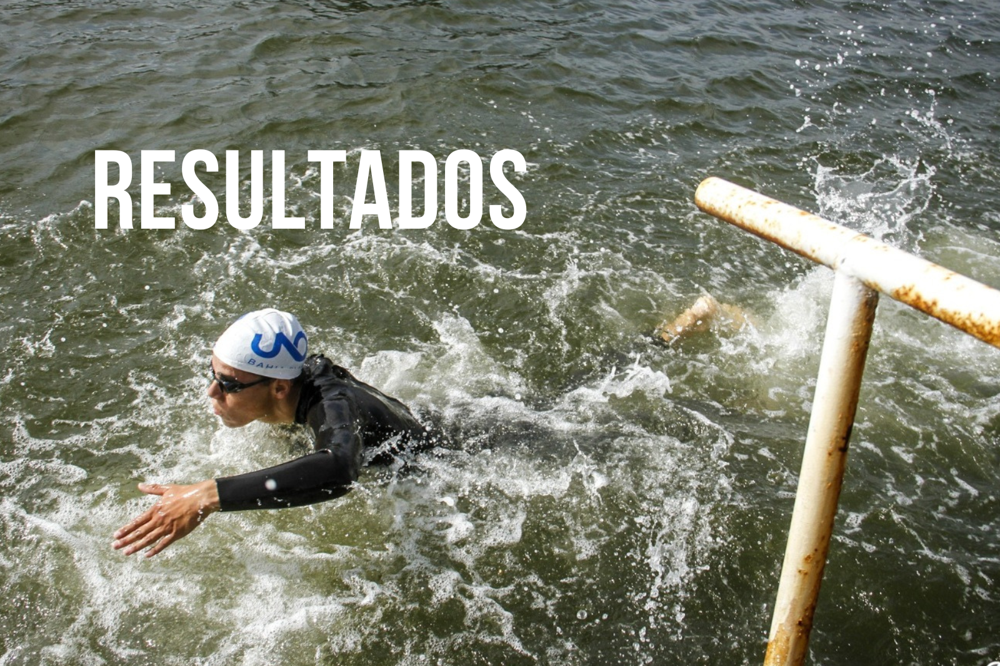

Resultados 2023
| Triatlon cross: desafio la salada |
P2 |
| Carrera de la inclusion 8k - Bahia blanca |
P3 |
| Campeonato bonaerense de triatlon - Necochea |
P1 |
| Camp argentino de triatlon - Mar del plata |
P1 |
| Duatlon sprint - Coronel Pringles |
P2 |
| Triatlon olimpico de Chascomus |
P2 |
| Triatlon sprint Ciudad de Azul |
P4 |
| Triatlon internacional de La paz |
P41 |
Resultados 2022
| Camp argentino de triatlon sprint - Mar del plata |
P3 |
| Triatlon Olimpico de Puan |
P3 |
| Ironman 5150 Buenos aires |
P6 |
| Campeonato argentino de duatlon - Tandil |
P4 |
| 5.000 metros en pista(16':05") - Bahia Blanca |
P1 |
| Duatlon sprint autodromo de Bahia blanca |
P2 |
| Duatlon sprint Punta alta |
P2 |
| Carrera de calle 7k - Bahia blanca |
P7 |
| Duatlon autodromo de Buenos Aires |
P12 |
| Duatlon autodromo de Viedma |
P1 |
| Campeonato bonaerense de triatlon - Tandil |
P5 |
| Campeonato bonaerense de triatlon - Tandil |
P4 |
| Campeonato bonaerense de triatlon - Azul |
P4 |
| Triatlon de Coronel Pringles |
P1 |